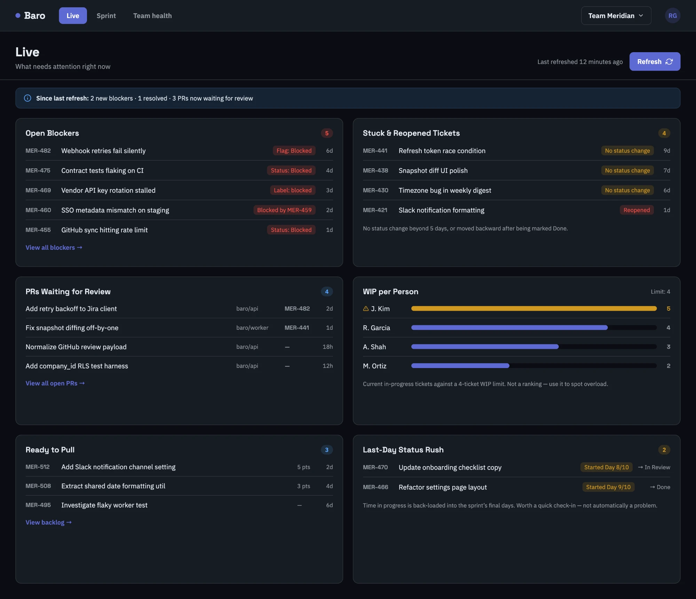
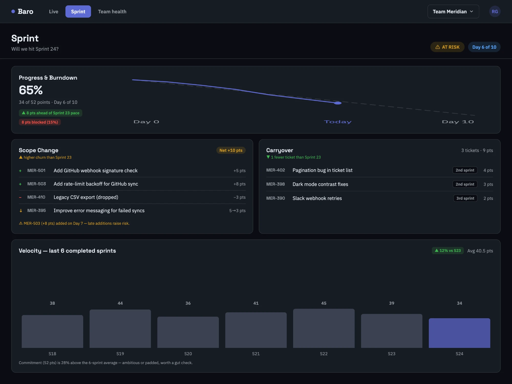
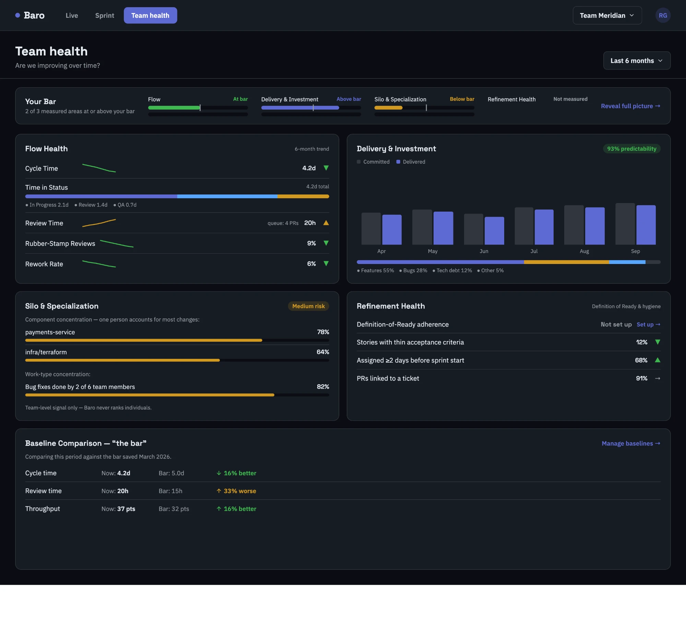

Review time20h vs a bar of 15h
Work waits longest in review. PRs sit about 20 hours before a first look, against a bar of 15. Four are in the queue right now. Pulling reviews forward is your quickest win.
Early access is open
Connect Jira and GitHub in minutes. Baro compares your team to a bar built on industry standards, and tells you in plain words where you clear it and where you don't.
What Baro says
Work waits longest in review. PRs sit about 20 hours before a first look, against a bar of 15. Four are in the queue right now. Pulling reviews forward is your quickest win.
Three tickets rolled over again, and some not for the first time. One is on its third sprint. That's one fewer than last sprint, but the ones that keep slipping need a decision.
Less work is coming back, and fewer reviews are rubber-stamped, now 9%. Reviews are getting more careful. Keep doing what you're doing.
Sample insights from a demo team.
How it works
Baro learns how your project is set up from the Jira and GitHub activity you already have. There's almost nothing to fill in.
Baro starts you with a baseline for a productive team, built on industry standards. Tweak it in settings to fit yours.
Not just numbers. Baro points to what's slowing the team down and what's working, so you know where to act on quality and growth.
Ask Baro in plain language. Need a metric we don't ship? Describe it and get a custom view built around your project.
Everything is team-level. No leaderboards, no individual rankings.
Baro works from activity you already create. Nobody fills in another form.
When something isn't measured yet, Baro says so instead of guessing.
Plugs into the tools your team already lives in
Live
Open blockers, tickets that stopped moving, PRs sitting in review and people over their WIP limit, all on one screen. Each refresh tells you what changed since you last looked.

Sprint
Burndown against your last sprint's pace, scope that crept in mid-sprint, carryover and six sprints of velocity. You get an honest read on risk while there's still time to act.

Team health
Start from a bar built on industry standards and tweak it to fit your team. Then see flow, delivery predictability, silos and refinement hygiene measured against it over six months.

Tell us where to reach you. We're letting teams in a few at a time and we'll be in touch soon.